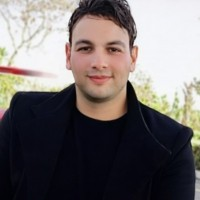

اتكلم ألماني بشكل طبيعي.
كورس محادثة عملي لمدة 7 أيام، تتكلم فيه وتسمع وتشارك في مواقف واقعية، وتمثّل مشاهد حوارية وتستخدم التعبيرات بنفسك.
أسبوع من التدريب المباشر والممارسة الفعلية باللغة الألمانية.
- ✓7 أيام متتالية
- ✓ساعتان يوميًا
- ✓14 ساعة Live
- ✓من مستوى A2+ فما فوق
- ✓محادثة وتمثيل أدوار ومشاهد حوارية
- ✓لقاء مع متحدث أصلي في اليومين السادس والسابع
شوف طريقة التدريب بنفسك
هنا تقدر تضيف فيديو تعريفي قصير يوضح أسلوب الكورس والتمارين التفاعلية.
هذا المكان مخصص لفيديو تعريفي بالكورس، وليس لمقطع فيلم محمي بحقوق النشر.
اتعلم الكلام من خلال الكلام.
مشاهدة قصيرة، فهم للتعبيرات، تمثيل للأدوار، وبعدها استخدام اللغة في حوار جديد من عندك.
محادثات واقعية
تتدرب على طرح الأسئلة والرد والتعبير عن رأيك في مواقف قريبة من الحياة اليومية.
مشاهد وتمثيل أدوار
تتعلم تعبيرات من مشاهد حوارية مختارة، ثم تمثّل الأدوار مع المجموعة وتعيد صياغة الحوار بطريقتك.
تفاعل مع متحدث أصلي
ساعة تفاعل مباشر مع متحدث أصلي للألمانية في اليوم السادس، وساعة أخرى في اليوم السابع.
تدريب عملي
الهدف هو استخدام اللغة فعليًا بدل الاكتفاء بالحفظ أو الترجمة كلمة بكلمة.
فرص أكثر للكلام
تمارين فردية وثنائية وجماعية تساعدك على المشاركة والتفاعل طوال اللقاء.
خطوة واضحة نحو الطلاقة
تطبّق التعبيرات في سياقات مختلفة وتتدرب على التحدث بوضوح وثقة أكبر.
7 أيام من المحادثة العملية
كل يوم له موضوع واضح، مع تمارين كلام وتطبيق. ندمج المشاهد والتمثيل في بعض اللقاءات من دون زيادة مدة الكورس.
التعريف بالنفس وبدء المحادثة
تقديم نفسك، طرح الأسئلة، بدء المحادثات والتعارف مع الآخرين.
الحياة اليومية والمواضيع الشخصية
الروتين والأسرة والاهتمامات والعادات، مع تدريب على حوار قصير وتمثيله.
تمثيل أدوارالتعبير عن الرأي والنقاش
التعبير عن رأيك، الموافقة والاختلاف وشرح وجهة نظرك بطريقة طبيعية.
السفر والوقت الحر والتجارب
التحدث عن السفر والأماكن والتجارب والخطط، مع مشهد حواري قصير وإعادة تمثيله.
مشهد حواري وتطبيقالعمل والتواصل
محادثات العمل والتواصل مع الزملاء والأسئلة والردود والمواقف المهنية اليومية.
حل المشكلات والتفاعل مع متحدث أصلي
شرح مشكلة وطلب المساعدة والتدرّب على حوار واقعي، مع ساعة تفاعل مباشر مع متحدث أصلي للألمانية.
ساعة مع متحدث أصليالمحادثة الحرة والمحاكاة النهائية
تطبيق شامل وتمثيل مواقف حياتية، مع ساعة تفاعل مباشر أخرى مع متحدث أصلي للألمانية.
ساعة مع متحدث أصلياتعلم مع شخص بيجمع بين اللغة والخلفية التقنية

Abdelrahman Elhawary
مهندس ومدرّس لغة ألمانية لديه أكثر من 7 سنوات من الخبرة مع الشركات الألمانية، وخبرة في تنفيذ المشاريع الهندسية والتقنية، بالإضافة إلى أكثر من 4 سنوات في التدريب. تساعده خلفيته الهندسية والتقنية على تقديم الألمانية بشكل عملي في سياقات الحياة والعمل والمجالات المهنية المختلفة.
كل اللي تحتاج تعرفه قبل الاشتراك
خطوتك القادمة نحو ألمانيا تبدأ بخطة أوضح
جلسة فردية عبر Zoom لمناقشة أسئلتك وترتيب خطواتك بخصوص الدراسة أو العمل أو السفر إلى ألمانيا.
خلّي عندك تصور أوضح بدل الحيرة بين الخيارات
نتكلم عن وضعك الحالي وهدفك، ونرتب معًا الأسئلة والخطوات التالية بشكل عملي يناسب ظروفك.
- ✓الدراسة في ألمانيا واختيار الخطوات الأولية
- ✓الاستعداد للعمل وتحسين عرض خبراتك وخطتك
- ✓ترتيب المعلومات والأسئلة المتعلقة بالسفر إلى ألمانيا
للاستفادة من وقت الجلسة، ابعت موضوعك وأسئلتك الأساسية عند الحجز.
الاستشارة إرشادية عامة وليست استشارة قانونية أو هجرة رسمية، ولا تضمن القبول أو التوظيف أو الحصول على التأشيرة.
جاهز تتدرّب على الكلام بالألماني؟
7 أيام، 14 ساعة من الممارسة المباشرة، ومشاهد حوارية وتمثيل أدوار، بالإضافة إلى لقاء مع متحدث أصلي في اليوم السادس والسابع. مناسب لمستوى A2+ فما فوق.
تواصل للحجز — €30